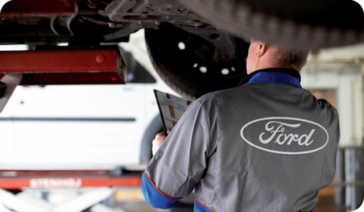

Contamos con un taller propio de 3500mts
Brindamos servicio completo de post venta a usuarios "FORD", con instrumental de última generación, equipos de electrodiagnóstico, herramientas especiales para distintas operaciones, personal altamente capacitado en la escuela de servicio de Ford Argentina S.C.A., sistema de pintura con cabina presurizada, banco maestro de estirado de chasis, sistema computarizado de preparación de pintura, todo acorde a las exigencias de fábrica y de los actuales clientes. También atendemos a flotistas y empresas, asesorándolos con planes de mantenimiento preventivo y reparaciones con descuentos especiales.